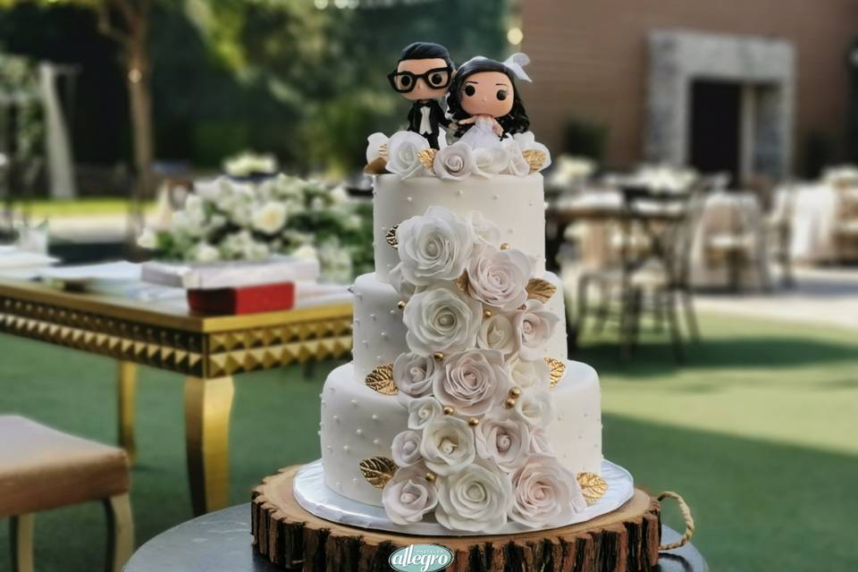
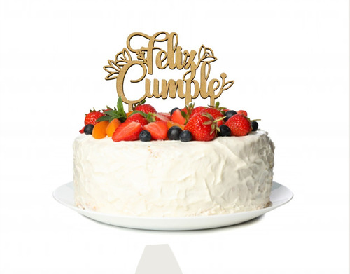
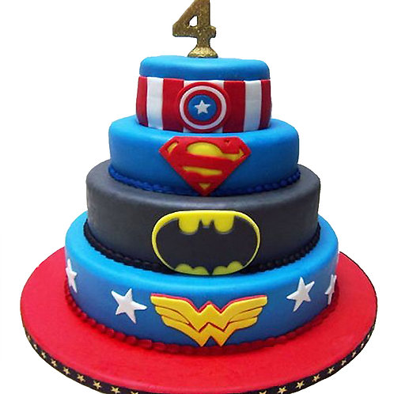

Diseños
Los más finos pasteles para toda ocasión: bodas, quince años, buatizos y fiestas infantiles



Los más finos pasteles para toda ocasión: bodas, quince años, buatizos y fiestas infantiles
Nuestros ingredientes son los más finos y son cuidadosamente seleccionados.
Tabla comparativa de los precios de algunos de nuestros pasteles
| Nombre del pastel | Tamaño | Precio (MXN) |
|---|---|---|
| Chocolate | Chico | 150 |
| Chocolate | Mediano | 300 |
| Chocolate | Grande | 450 |
| Vainilla | Chico | 120 |
| Vainilla | Mediano | 250 |
| Vainilla | Grande | 400 |
| Frutas | Chico | 180 |
| Frutas | Mediano | 350 |
| Frutas | Grande | 500 |
Somos una pasteleria con más de 20 años de experiencia en el ramo, ofrecemos los mejores pasteles para toda ocasión.
Somos una empresa familiar orgullosamente mexicana con 30 años de experiencia en la repostería. Nos especializamos en la producción, distribución y comercialización de pasteles y postres artesanales elaborados con ingredientes de la más alta calidad que nos permiten llegar a tu mesa y compartir contigo nuestro sabor tradicional.
En 1991 comenzó en una cochera familiar de Puebla, este gran proyecto llamado La Zarza, el cual en un principio tenía la intención de ser un negocio que permitiera el sustento de una familia de 16 integrantes. Gracias a los buenos resultados para 1993, pasamos de comercializar una marca establecida a generar la nuestra, con una línea de productos 100% original, con una imagen y marca nueva. Para 1997 ya contábamos con 2 puntos de venta y comenzamos a tener impacto en el mercado poblano, por lo que los miembros de la familia ya no nos dábamos abasto y nuestra cochera tampoco. Así que decidimos mudarnos e invitar a profesionales externos para consolidar nuestro crecimiento y estructura. La preferencia de nuestros clientes permitió que durante los años 2000 a 2004 ampliáramos nuestra Gran Familia, además de mejorar nuestras instalaciones y líneas de producción. Durante ese período, logramos la apertura de 38 puntos de venta, no solo en el interior del Estado de Puebla, también en Tlaxcala y 2 más en la Ciudad de México. En el 2008 compartimos un gran festejo, obtuvimos la certificación Endeavor Puebla, lo cual representó un gran logro para nuestra Gran Familia que, en ese momento, ya contaba con 44 sucursales y un centro de distribución. Llegó el momento de reinventarnos y en 2010 lanzamos la nueva imagen de La Cereza Pasteleria, con una nueva promesa de venta "Pasteles para Compartir", la cual seguimos compartiendo en la actualidad. Nuestros esfuerzos por consolidarnos como una de las empresas de repostería más importantes del país, continúan. A 30 años de haber iniciado este gran proyecto, contamos con una fábrica, dos centros de distribución, un corporativo y más de 130 sucursales ubicadas en los Estados de Puebla, Tlaxcala, Veracruz, Morelos, Ciudad de México e Hidalgo que comparten nuestro sabor tradicional.
Generar unión y felicidad en las familias elaborando pasteles y postres de alta calidad, conservando siempre el sabor tradicional que satisface a nuestros clientes, buscando al mismo tiempo ser una empresa eficiente que genere beneficios a sus integrantes, accionistas y a la sociedad.
Ser una empresa líder en repostería, reconocida a nivel nacional por la calidad en la elaboración de sus productos, sabor inconfundibles y excelente servicio.